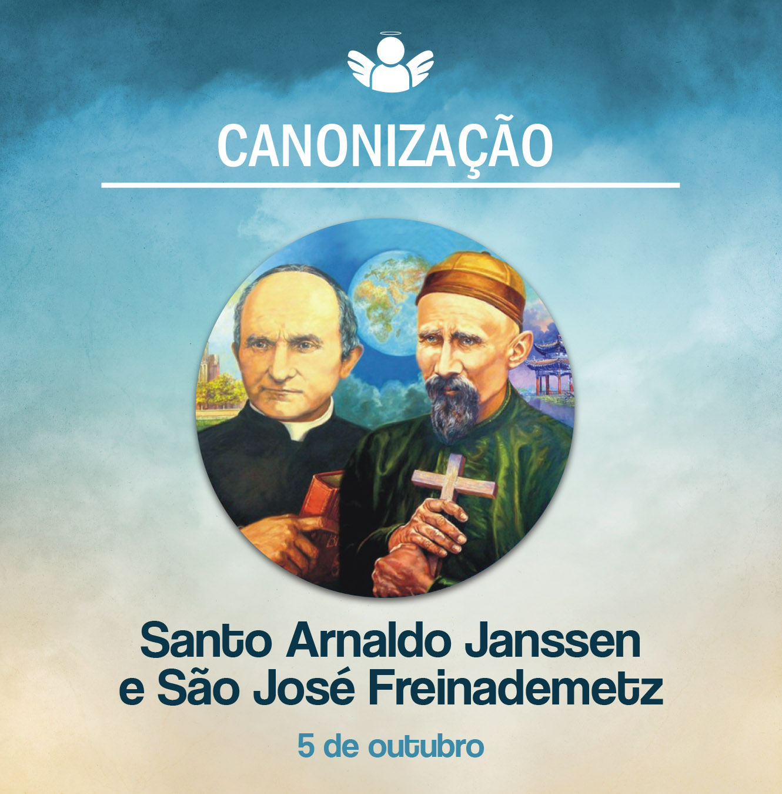

Canonização de Santo Arnaldo Janssen e São José Freinademetz
05 de outubro de, 2020
No dia 5 de outubro de 2003, a Praça São Pedro, no Vaticano, acolheu peregrinos de todas as partes do mundo, especialmente os membros das três congregações fundadas por Arnaldo Janssen: os missionários do Verbo Divino (SVD), as missionárias servas do Espírito Santo (SSpS) e as irmãs servas do Espírito Santo da Adoração Perpétua (SSpSAP). Nesse dia, Arnaldo Janssen e José Freinademetz foram declarados santos pelo Papa João Paulo II.
Santo Arnaldo Jassen
Arnaldo nasceu no dia 5 de novembro de 1837, em Goch, Alemanha, em uma família profundamente religiosa. Foi ordenado padre em 15 de agosto de 1861 e dedicou-se ao ensino de Ciências e Matemática. Por sua piedade e devoção ao Sagrado Coração de Jesus, foi nomeado diretor diocesano do Apostolado da Oração.
Apesar da perseguição religiosa, Arnaldo inaugurou, em 8 de setembro de 1875, em Steyl, Holanda, a primeira casa missionária da Congregação do Verbo Divino. Sentindo necessidade da presença da mulher na missão, especialmente nas famílias, deu início à Congregação Missionária das Servas do Espírito Santo, no dia 8 de dezembro de 1889.
Em 1896, completou sua obra missionária com a fundação do ramo contemplativo: a Congregação das Irmãs Servas do Espírito Santo da Adoração Perpétua. Pela adoração permanente do Santíssimo Sacramento, intercede pela Igreja e pelas outras duas congregações missionárias.
Arnaldo faleceu em 15 de janeiro de 1909. Sua total entrega à vontade de Deus foi abençoada pelo crescimento contínuo das comunidades por ele fundadas nos cinco continentes.
Sao Jose Freinademetz
José Freinademetz nasceu em Oies, norte da Itália, em 15 de abril de 1852. Sentia um forte apelo de dedicar sua vida às missões. Foi ordenado padre aos 23 anos e, dois anos após sua ordenação, entrou em contato com Arnaldo Janssen. Com a autorização de seu bispo, foi para Steyl (Holanda) e, no dia 2 de março de 1879, recebeu a cruz missionária e foi enviado à China.
O desejo de Freinademetz era anunciar o Evangelho aos chineses e dar sua vida por aquele povo. Ficou dois anos em Hong Kong e, depois, foi para Shantung do Sul que, à época, tinha 9 milhões de habitantes e apenas 158 cristãos.
Em meio a muitas perseguições, trabalho duro e dificuldades de todo o tipo na formação das novas comunidades cristãs, Freinademetz foi descobrindo o coração dos chineses. Identificou-se tanto com eles que até seu rosto já parecia ser de um oriental. Foi apelidado de Fu Shen Fu (“Padre Feliz”).
Por seu amor à China, jamais retornou à Europa. Em 28 de janeiro de janeiro de 1908, Pe. José Freinademetz faleceu em consequência do tifo, contraído enquanto socorria os doentes. A grande lição que nos deixa é que o amor transforma.